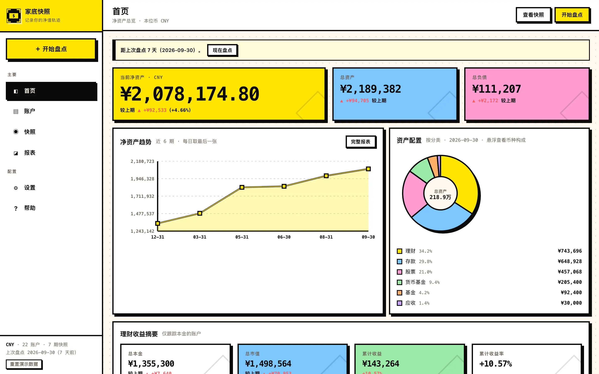
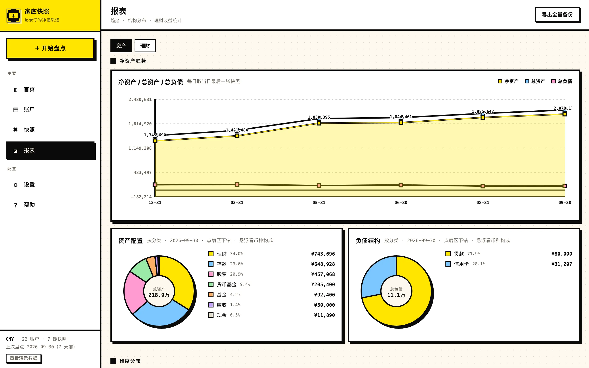
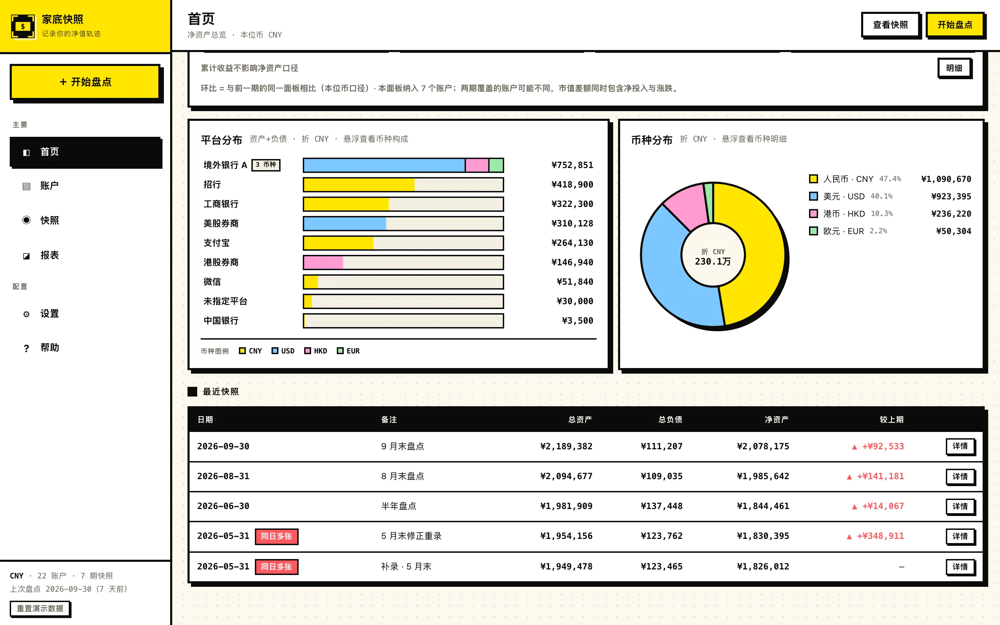
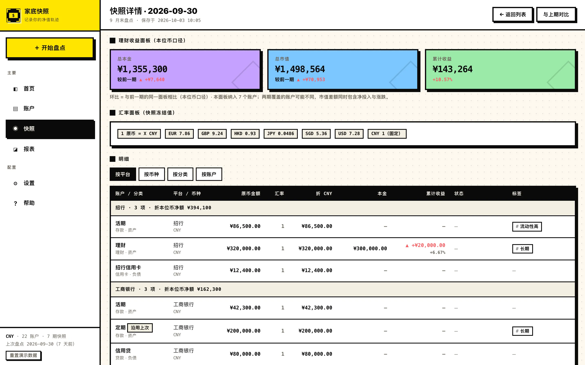
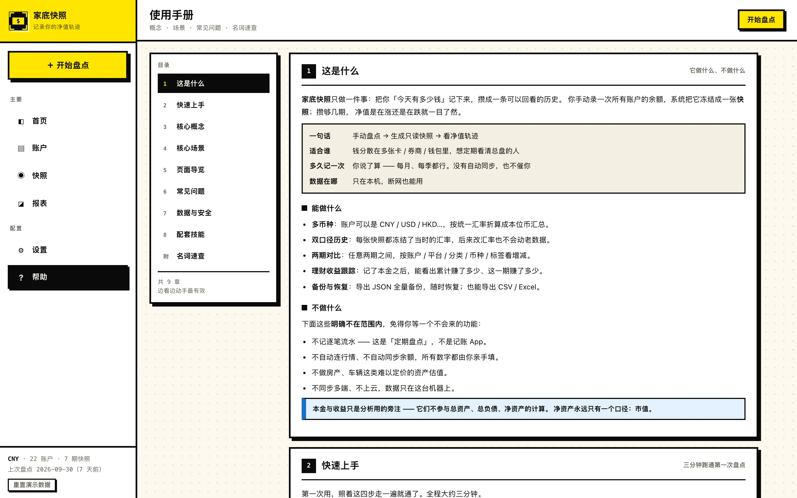

1
我现在有多少家底？
总资产、总负债、净资产，一屏给完。

首页 · 净资产
手动盘一次所有账户的余额
冻结成一张 只读 的快照
攒几期，净值涨跌一目了然
不是记账 App —— 不记流水，只盘点
不自动同步、不连行情 —— 数字亲手填
不上云、不注册 —— 只在这台电脑上
不上云 · 不注册 · 不记流水 · 不连行情 · 不自动同步 · 不埋点
下面每张图都出自同一份只读演示数据 —— 点「在线试用」看的，就是这五个页面。
总资产、总负债、净资产，一屏给完。

首页 · 净资产
每期冻结一次，跨期直接比。

报表 · 趋势
按平台、分类、币种、标签切开看。

首页 · 平台分布 / 币种堆叠
记本金，算累计收益与本期收益。

快照详情 · 收益面板
界面里自带一本使用手册。

#help 页 · 9 章
不装 App、不起后台、不连数据库。它确实需要 Node.js —— 写出来是因为假装不用反而更麻烦。
要求 Node.js ≥ 22.18 —— 终端里 node -v 自检；不够就去 nodejs.org 装 LTS 版。
npm ci --omit=dev # 装依赖，只一次 npm start # 起服务，自动开浏览器 → http://127.0.0.1:5188/#t=<你的令牌>
./.data/ —— 拷走整个目录就搬家127.0.0.1 —— 同网段的设备也访问不到不想一个个手填？把账单截图丢给助手，它读出来给你看，落库仍要你点头。
已分析完 4 个账户 —— 这是将写入的清单。
录入交给它，落库仍要你点头。
* 占比由助手额外算出 · 非系统口径 · 分母为总资产（不含负债）1,312,620
配套技能「家底快照助手」独立交付，不在应用包里 —— 装法是把它拷进平台的技能目录。
钱散在多张卡、券商、钱包、境外账户里
想看清「净资产」，不只是这个月花了多少
资产数据敏感，不想交给要注册的 App
期数不用多 —— 三个月一次，也能看出趋势。
127.0.0.1，不发起任何外部请求，数据全部在 ./.data/ 里。你可以断网跑一遍 —— 它照样能用。#t=…）访问即可，存成书签长期有效。0.0.0.0 —— 那会让同网段的设备都能访问。.data/ 目录拷过去，在新机器上装好依赖就能接着用。账户、快照、汇率、备份、令牌全在里面。backups/ 里最新的那份拷到别处。另外，收益指标有「首期」「基准缺失」两种不展示数值的合法状态，不是 bug，是口径。